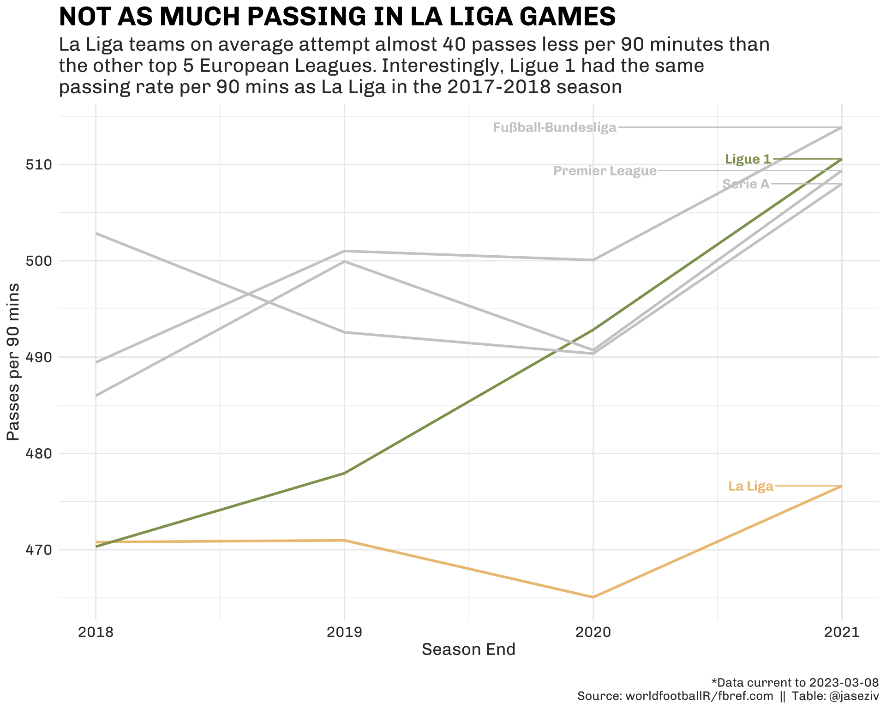
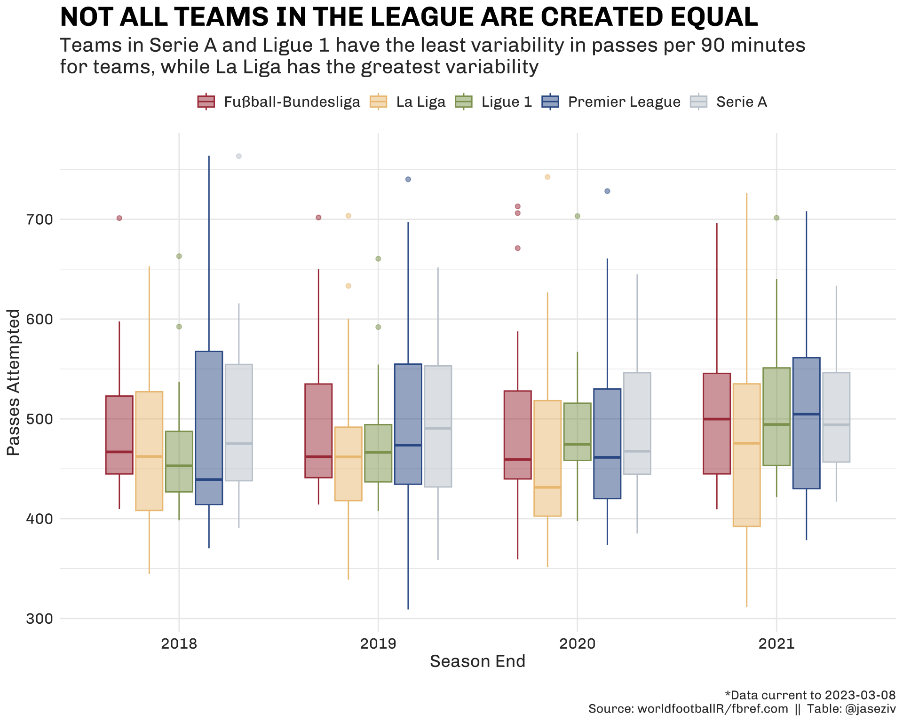
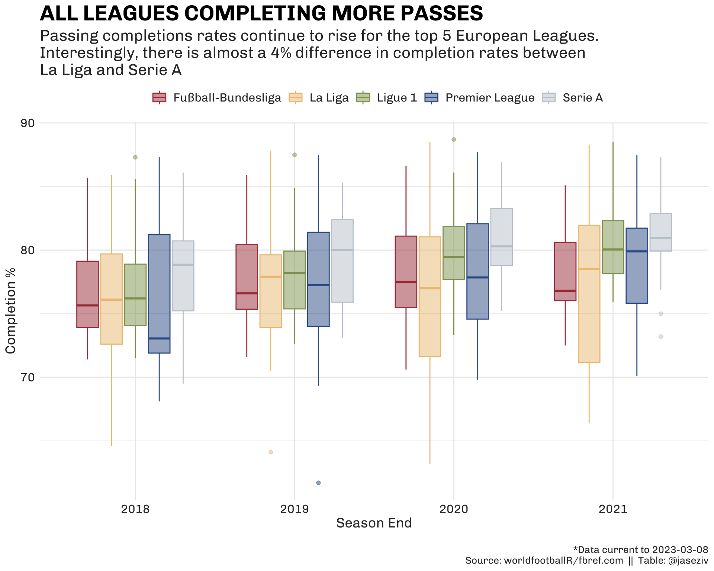
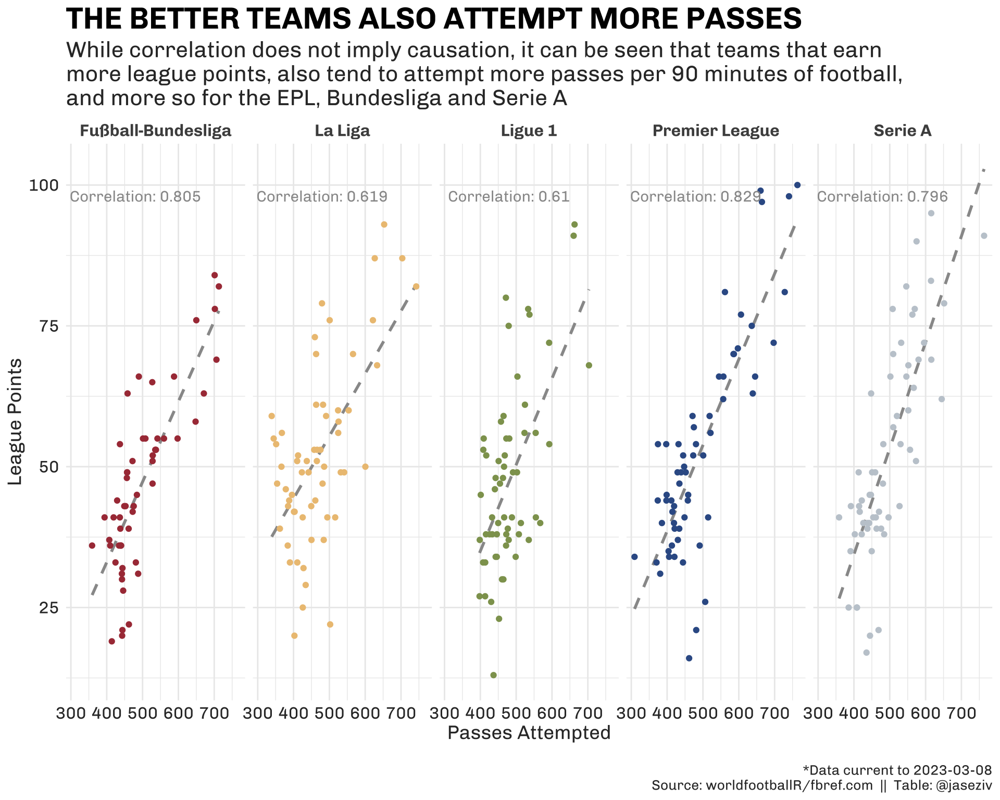
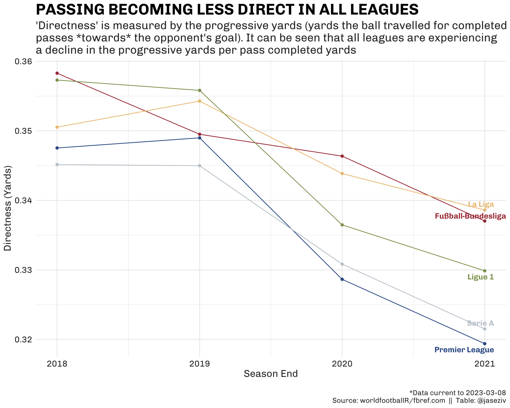
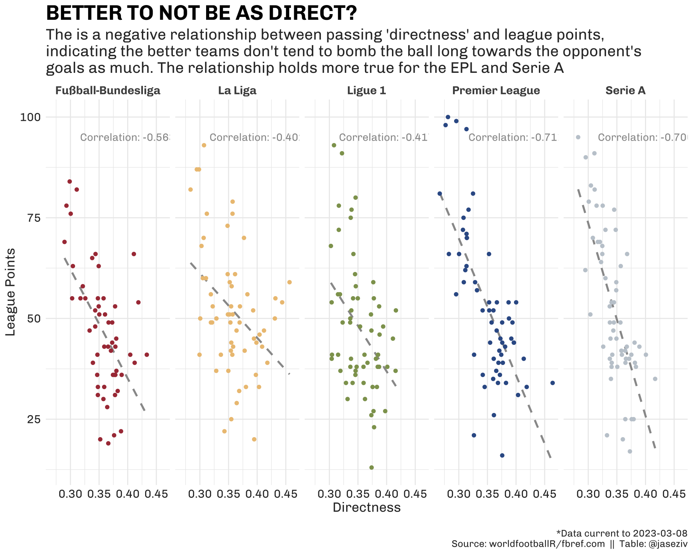

Football (soccer) as often referred to as “the beautiful game”, is made all the more beautiful because of the intricacies of playing styles between different nations.
This piece aims to begin exploring some of these differences in the playing style of the top five European domestic leagues. For reference, when we refer to the top five, we’re referring to the following domestic leagues:
- Fußball-Bundesliga (Germany)
- La Liga (Spain)
- Ligue 1 (France)
- Premier League (England)
- Serie A (Italy)
Specifically, this piece will focus on passing and analyse whether there are any differences in how teams in these leagues move the ball around the pitch.
Data for this piece comes from fbref, from the worldfootballR R package. This package can currently be installed from GitHub, with the repository here.
As usual, a quick demo of the package… to get the data you’re after, all you need to do is run the following lines of code:
devtools::install_github("JaseZiv/worldfootballR")
library(worldfootballR)
countries <- c("ENG", "ITA", "FRA", "GER", "ESP")
# get league table
league_table <- fb_season_team_stats(country = countries, gender = "M", season_end_year = c(2018:2021), stat_type = "league_table")
# get season passing stats
passing <- fb_season_team_stats(country = countries, gender = "M", season_end_year = c(2018:2021), stat_type = "passing")Attempting and Completing Passes
First, we turn our attention to the leagues that attempt the most number of passes per 90 minutes of football.
Other than when Serie A had the highest passing attempts in the 2017-18 season, the German Bundesliga has reigned supreme when it comes to the number of passes attempted, with the current season the highest number of passes attempted (514).
Teams in France’s League 1 have continued to increase their passing attempts, overtaking The EPL and Serie A for the first time this season. Interestingly, in the 2017-18 season, League 1 and La Liga were equally the lowest passing leagues, and in three short years, the respective leagues have diverged in their passing attempts.

Drilling down further and analysing individual teams within league seasons, it can be seen below that while the Bundesliga and EPL have some of the highest passing rates, they also have some of the highest variability, with the discrepancy being greatest between the highest and lowest passing teams within each league (although La Liga has the greatest variability of all).

Completion Rates
Attempting passes is no doubt important to the game, but one could argue that completing those passes is more vital.
The boxplot below shows that generally speaking, teams in each of the leagues have increased their passing completion rates over the last four years (although the Bundesliga has somewhat plateaued).
Serie A teams have consistently had higher passing accuracy than teams in the other leagues, while La Liga has had the greatest completion rate variability of all the leagues - no doubt driven by the vast differences in quality between The Madrid teams and Barca, and the rest of the league.

Why does this matter?
It can be seen below that teams that attempt more passes during a season tend to accumulate more league points, with a fairly strong positive correlation between the variables. The below data does not include the current season.
This holds more true for the EPL correlation of (0.829), Bundesliga (0.805) and Serie A (0.796), while the relationship is not as strong for La Liga and Ligue 1.

Which Direction are the Passes Heading?
So, we have seen that there are some differences between the leagues with regards to how often, and how successfully they move the ball to teammates. What about the direction that the ball travels in when their making passes?
For this, we can look at the progressive distances (in yards) of completed passes and compare this to the total yardage of all passes completed. Progressive yards are defined by fbref as:
Total distance, in yards, that completed passes have travelled towards the opponent’s goal. Note: Passes away from opponent’s goal are counted as zero progressive yards
The resulting figure indicates how many progressive yards a ball has travelled per yard of completed passes. A higher number indicates a team moves the ball more directly, while a lower figure indicates a greater share of a teams completed passing yards are not as direct to the opponent’s goal.
Leagues Passing Less Directly?
Leagues have progressively been moving away from more direct passing routes, with the EPL leading the way (0.319 progressive yards per total yards completed), while La Liga are the least direct with 0.339 progressive yards per total yards completed.

Like with the correlation between league points and passes attempted, there also appears to be a relationship between directness and league points, however the relationship is negative, meaning that teams that are less direct with their passing also tend to earn more league points at the end of a season.
Additionally, this relationship isn’t as strong for all leagues. The relationship is fairly strong for the EPL (correlation of -0.711) and Serie A (-0.706), while the weakest in La Liga (-0.402).

We can also look at the individual team seasons that have been the most and least direct passing seasons.
The 20 least direct teams over the last four seasons are listed below, with the top of the list dominated by EPL clubs, specifically Man City, which hold four of the top six places.
Interesting to note, it appears that teams on this list have also finished nearer the top of the table RK that the bottom of the table, reinforcing our correlation above.
| PREMIER LEAGUE DOMINATES LEAST DIRECT PASSING | ||||
| A Man City feature in four of the top six seasons of least direct passing, with the other two sides in the top 6 also being EPL teams. | ||||
| League | Squad | Season End | Rk | Directness (yards) |
|---|---|---|---|---|
| Premier League | Manchester City | 2020 | 2 | 0.267 |
| Premier League | Manchester City | 2021 | 1 | 0.267 |
| Premier League | Arsenal | 2021 | 9 | 0.267 |
| Premier League | Chelsea | 2021 | 8 | 0.276 |
| Premier League | Manchester City | 2019 | 1 | 0.277 |
| Premier League | Manchester City | 2018 | 1 | 0.281 |
| Serie A | Juventus | 2018 | 1 | 0.282 |
| Premier League | Chelsea | 2020 | 4 | 0.283 |
| La Liga | Barcelona | 2020 | 2 | 0.284 |
| La Liga | Real Madrid | 2021 | 2 | 0.289 |
| Fußball-Bundesliga | Dortmund | 2020 | 2 | 0.290 |
| Fußball-Bundesliga | Dortmund | 2021 | 7 | 0.291 |
| Premier League | Liverpool | 2021 | 4 | 0.292 |
| Ligue 1 | Nice | 2021 | 12 | 0.293 |
| Fußball-Bundesliga | Bayern Munich | 2019 | 1 | 0.293 |
| Fußball-Bundesliga | Leverkusen | 2021 | 3 | 0.294 |
| Serie A | Inter | 2021 | 2 | 0.294 |
| La Liga | Sevilla | 2021 | 4 | 0.294 |
| La Liga | Real Madrid | 2020 | 1 | 0.295 |
| Serie A | Napoli | 2020 | 7 | 0.295 |
| SOURCE: worldfootballR TABLE: @jaseziv |
||||
Similarly, we can also look at the 20 most direct passing teams of the last four seasons.
The finishing positions of these clubs looks to be somewhat closer to the bottom of their league tables (Getafe in La Liga 2018-19 and RP Leipzig in Bundesliga 2018-19 the notable exceptions).
Cardiff City’s lone Premier League season was the most direct passing season, with 0.464 progressive yards per passing yards completed.
| MORE DIRECT PASSING TEAMS GENERALLY WEAKER TEAMS? | ||||
| At first glance, it appears that the clubs who have the highest progressive yards per passing completed yards tend to finish lower on the table than those teams who are the least direct. Cardiff City's lone EPL season in 2019 tops the chart for most direct towards goal passing season | ||||
| League | Squad | Season End | Rk | Directness (yards) |
|---|---|---|---|---|
| Premier League | Cardiff City | 2019 | 18 | 0.464 |
| La Liga | Getafe | 2019 | 5 | 0.457 |
| La Liga | Osasuna | 2021 | 17 | 0.446 |
| La Liga | Getafe | 2020 | 8 | 0.444 |
| Fußball-Bundesliga | Union Berlin | 2020 | 11 | 0.433 |
| La Liga | Getafe | 2018 | 8 | 0.432 |
| La Liga | Alavés | 2019 | 11 | 0.431 |
| La Liga | Cádiz | 2021 | 11 | 0.420 |
| Fußball-Bundesliga | Eint Frankfurt | 2019 | 7 | 0.419 |
| Premier League | Stoke City | 2018 | 19 | 0.419 |
| La Liga | Alavés | 2020 | 16 | 0.418 |
| Serie A | Crotone | 2018 | 18 | 0.417 |
| Ligue 1 | Nantes | 2018 | 9 | 0.416 |
| Ligue 1 | Toulouse | 2018 | 18 | 0.416 |
| Premier League | Burnley | 2019 | 15 | 0.413 |
| Fußball-Bundesliga | Hannover 96 | 2018 | 13 | 0.412 |
| La Liga | Alavés | 2018 | 14 | 0.412 |
| Ligue 1 | Amiens | 2018 | 13 | 0.411 |
| Fußball-Bundesliga | RB Leipzig | 2019 | 3 | 0.411 |
| La Liga | Leganés | 2018 | 17 | 0.409 |
| SOURCE: worldfootballR TABLE: @jaseziv |
||||
While not a considerable difference in the passing activities between the top five European domestic leagues, there is still some differences that will be interesting to see how their leagues evolve over the coming years.
As always, any feedback or opinions would be valued in the comments sections, or feel free to get in touch on Twitter @jaseziv.